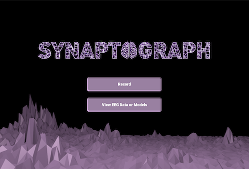
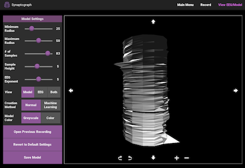

A desktop application that creates 3D models from EEG brain scans. The 3D models are saved as .stl files and can be printed using a 3D printer. Synaptograph is my capstone project at The University of Central Florida. I am currently working on it with four other Computer Science students. The project is sponsored by two Visual Arts profeesors. We are using the Emotiv Epoc+ headset to obtain the EEG brain scans.
The goal of our project is to represent the EEG scan data using 3D models in a way that is both accurate and visually pleasing. The project is still in progress but a few screenshots are provided below.
 